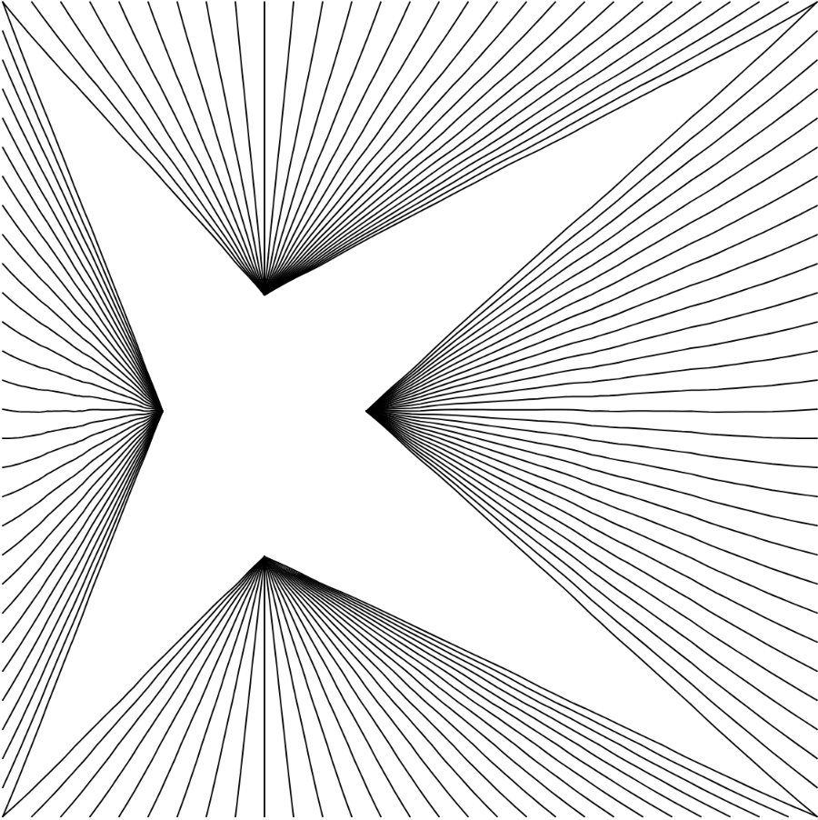
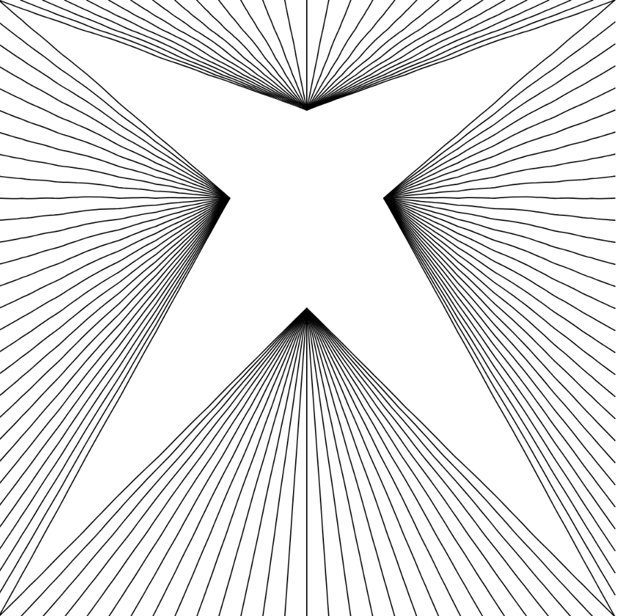
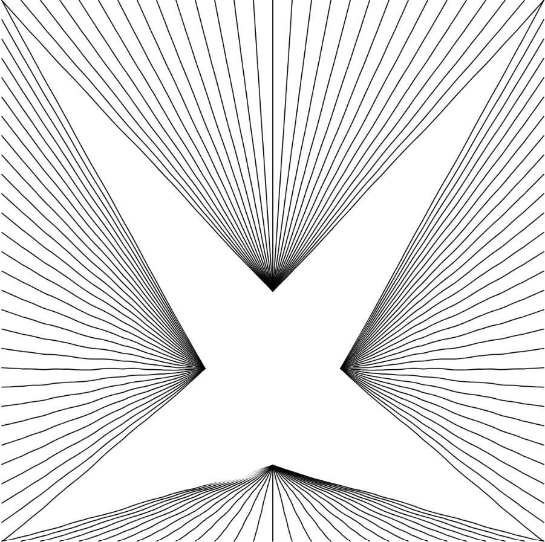
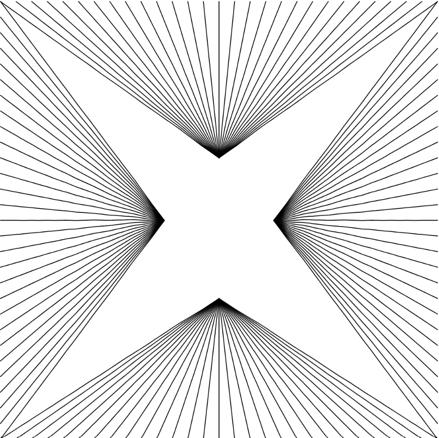
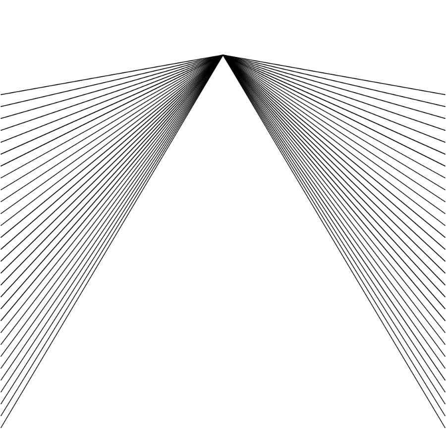
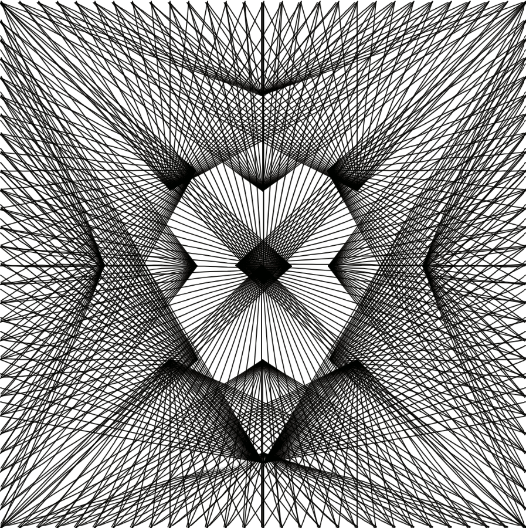
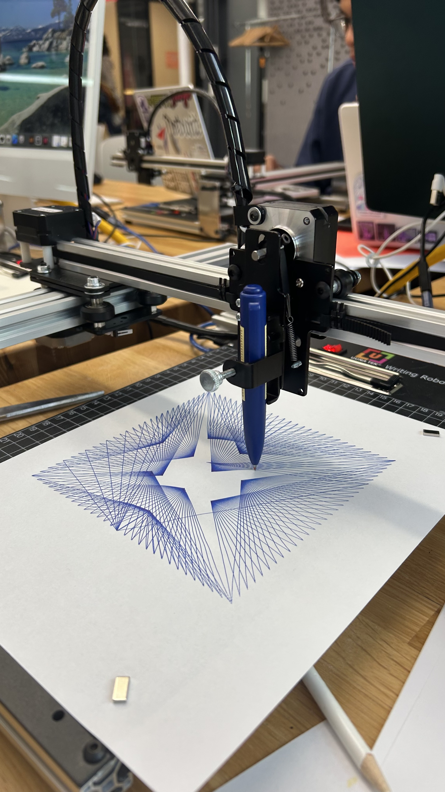
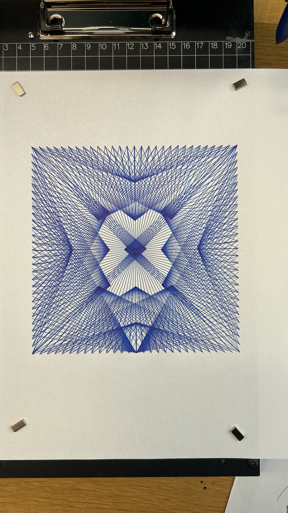

Back to Index
Pen Plotter Process Documentation
I was inspired by Peter Zumthor's Bruder Klaus Chapel in Germany.
The way he used negative space to create a mystical and intimate interior motivated me to explore negative space in my pen plotter project.
While making the sketches, I tried to capture the perspective of looking up from inside chapel. The interior concrete walls retain the impression of the wooden framework, creating lines that seem to extend toward the negative space of the oculus.
In my sketches, I used for loops to create lines that converge toward the center, while limiting their range to leave negative space. I also added slight wiggles to the lines to give them a more natural feeling.
I then experimented with shifting the center of the composition and exported several sketches with different center points. I also played around with other shapes and eventually created a triangular negative space.
Finally, I imported all the sketches into seperate layers and used a pen plotter to draw them. It was a fun process to see how the negative space created a sense of three-dimensional depth.






Final Result

